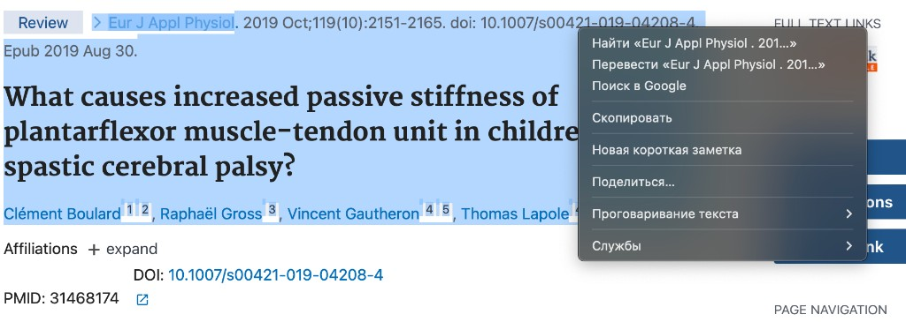

Форматирование источника
 by Alex V
by Alex V
Вставь данные и получи строку в формате: Название (Автор, Год).
Как копировать с PubMed

Копируй с сайта PubMed, как указано на изображении.
Можно вставлять: название; авторы; год, по строкам или через тире. Например:
Title - Reijden - 2017
Title - Reijden - 2017
Пример результата: Iodine in dairy milk: Sources, concentrations and importance to human health (Reijden, 2017)
Ручной ввод
Пример: Severe acute respiratory syndrome coronavirus-2 and the deduction effect of angiotensin-converting enzyme 2 in pregnancy (Chang, 2020)
По PMID из PubMed
Введи номер статьи в PubMed (PMID). Программа подставит название, фамилию первого автора, год и журнал — как у остальных источников. Сначала запусти сервер: дважды щёлкни по файлу start-server.bat в этой папке (или в терминале команда npm start), дождись открытия страницы — без этого адрес localhost не откроется.